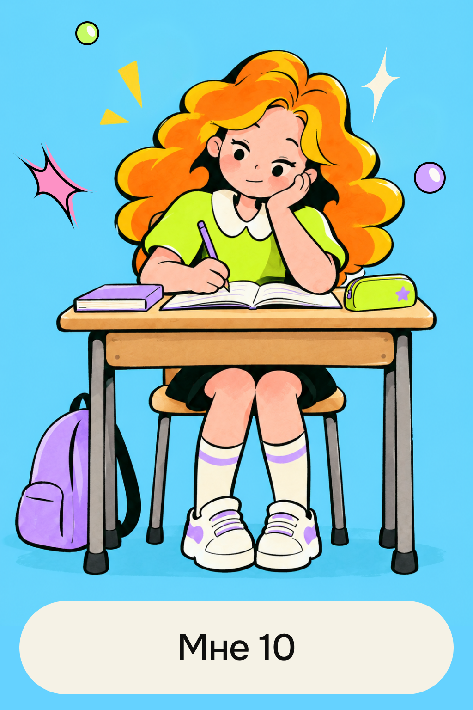

Школа
«В пятом классе мы начали изучать геометрию. Я хорошо понимала объяснения учительницы и быстро решала задачки в тетради, и пара моих одноклассников тоже отлично справлялись. Когда она спрашивала, кто может показать решение у доски, мы одновременно поднимали руки. Но она почти никогда не вызывала к доске меня».